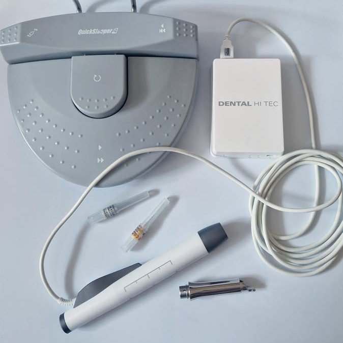
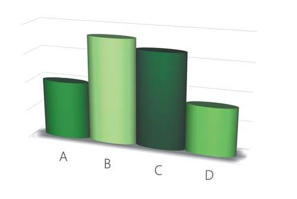
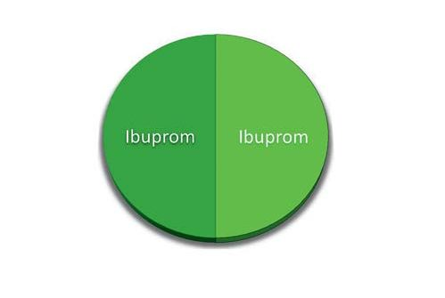
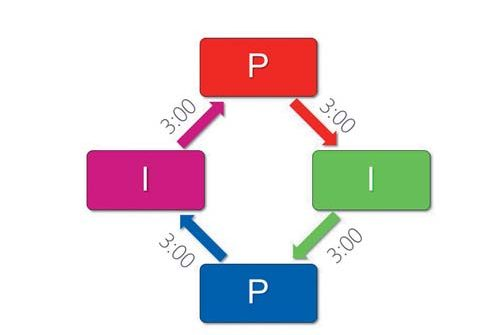
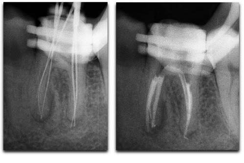

Ендодонтія · журнал «ДентАрт» 2023 №2
Контроль болю в ендодонтії
Pain control in endodontics
Біль є найчастішим, інколи ж єдиним симптомом стоматологічних захворювань. Страх болю призводить до відмови від процедур, ускладнень і посилення інфекційних процесів — тому контроль болю на прийомі є ключовим для якісного лікування.
Сучасною стратегією прийнято вважати концепцію «3D»: Diagnose the pain condition (діагностика болю) — appropriate Dental treatment (адекватне лікування) — administer effective Drugs (призначення ефективних препаратів).
Діагностика болю
Ефективний контроль болю починається з точної діагностики; важливо диференціювати одонтогенну та неодонтогенну природу болю. Допоміжні фактори:
- лікар має відтворити біль, з яким звернувся пацієнт (наприклад, при скарзі на біль від холодного — холодовий тест виявляє причинний зуб);
- місцева анестезія знижує або повністю блокує больовий симптом;
- наявність джерела інфекції в зубі (глибокий, прихований чи вторинний карієс, нераціональні ортопедичні конструкції, травма, залучення пародонта);
- відсутність тригерних зон і характерний біль, що посилюється надвечір та вночі;
- у складних випадках — діагностичне препарування («дриль-тест»: тонким кулястим бором без анестезії препарують емаль/дентин для виявлення реакції пульпи).
Адекватне лікування
Ендодонтичне лікування включає знеболювання (класичне або апаратне; за протипоказань — седація/наркоз), ізоляцію рабердамом, препарування порожнини і створення доступу, інструментальну обробку з рясною іригацією гіпохлоритом натрію та постійну обтурацію з коронковим відновленням. З точки зору болю основна мета — зменшити напругу тканин через набряк і знизити рівень медіаторів запалення.
Окремо заслуговують на увагу апаратні методики. STA Wand (Milestone, США) — комп'ютерна система для будь-якого виду знеболювання, що автоматично регулює швидкість подачі та напругу в тканинах. QuickSleeper (DHT, Франція), окрім цього, дозволяє робити транскортикальну анестезію безпосередньо у спонгіозну кістку — це має перевагу перед провідниковою анестезією нижніх молярів (немає оніміння половини язика та щоки, менша потреба в анестетику та висока ефективність знеболювання «гарячого зуба» при пульпітах).
Ефективні препарати (НПЗЗ)
Найпоширеніша група — нестероїдні протизапальні засоби (НПЗЗ) з чотирма ефектами (знеболюючий, протинабряковий, жарознижувальний, антикоагуляційний). В ендодонтії найдієвішими є препарати з протинабряковим і жарознижувальним ефектом: ібупрофен та парацетамол. Разова доза ібупрофену за вагою: до 100 кг — 400 мг, більше — 600 мг; інтервал 6 годин, тривалість до 3 днів (сильний вплив на ШКТ). Протипоказання ібупрофену: виразкова хвороба шлунка та виразковий коліт, неконтрольований підвищений тиск, захворювання нирок, прийом розріджувачів крові чи аспірину, третій триместр вагітності — тоді альтернативою є подвійна доза парацетамолу. Встановлено синергію ібупрофену й парацетамолу при інтервальному прийомі.
Практичні рекомендації
- 400 мг ібупрофену per os за 20 хв до маніпуляцій у разі гострого/загострення пульпіту чи періодонтиту.
- 400 мг ібупрофену пацієнтам, які знають про слабку ефективність мандибулярної/торусальної анестезії.
- Обов'язково ібупрофен 400 мг після лікування та через 6 годин у день лікування — при механічному пошкодженні періапікального простору інструментами та/або екструзії матеріалу за межі каналу.
- За протипоказань до ібупрофену — 800–1000 мг парацетамолу.
- При болях середнього характеру й неможливості звернутися одразу — 400 мг ібупрофену кожні 6 годин, не більше 3 днів.
- При інтенсивних болях — інтервальна схема (синергія): ібупрофен 400 мг, через 3 години парацетамол 400 мг, ще через 3 години знову ібупрофен, і так не більше 3 днів.
Антибіотики широкого спектра (наприклад амоксиклав) не мають знеболювального ефекту і можуть призначатися в комбінації з НПЗЗ лише за ознак системного поширення інфекції (температура 38,5 °C і вище, озноб, утруднене дихання).
Матеріал є фаховою публікацією для лікарів-стоматологів; дозування та призначення препаратів наведено в клінічному контексті й не є рекомендацією для самолікування.





Висновки
Контроль болю в ендодонтії досягається дотриманням концепції «3D» — адекватна діагностика, протокол ендодонтичного лікування та призначення ефективних медикаментів, що дозволяє забезпечити комфорт і високу якість лікування кореневих каналів.
Література
- Okeson J. P. Bell's Oral and Facial Pain. 7th ed. Hanover Park, IL: Quintessence Books; 2014.
- Pak J. G., White S. N. Pain prevalence and severity before, during, and after root canal treatment: a systematic review. J Endod. 2011; 37(4): 429–438.
- Rosenberg P. A., Babick P. J., Schertzer L., Leung A. The effect of occlusal reduction on pain after endodontic instrumentation. J Endod. 1998; 24(7): 492–496.
- Hargreaves K., Keiser K. Local anesthetic failure in endodontics: mechanisms and management. Endod Topics. 2002; 1: 26–39.
- Menhinick K. A., Gutmann J. L., Regan J. D., Taylor S. E., Buschang P. H. The efficacy of pain control following non-surgical root canal treatment using ibuprofen or a combination of ibuprofen and acetaminophen: a randomized, double-blind, placebo-controlled study. Int Endod J. 2004; 37(8): 531–541.
- Daniels S. E., Goulder M. A., Aspley S., Reader S. A randomised, five-parallel-group, placebo-controlled trial comparing the efficacy and tolerability of analgesic combinations including a novel single-tablet combination of ibuprofen/paracetamol for postoperative dental pain. Pain. 2011; 152(3): 632–642.
- Fouad A. Are antibiotics effective for endodontic pain? Endod Topics. 2002; 3: 52–66.
- Rogers B. S., Botero T. M., McDonald N. J., Gardner R. J., Peters M. C. Efficacy of articaine versus lidocaine as a supplemental buccal infiltration in mandibular molars with irreversible pulpitis: a prospective, randomized, double-blind study. J Endod. 2014; 40(6): 753–758.